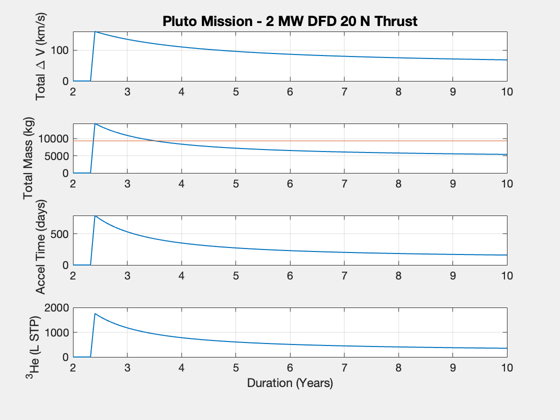
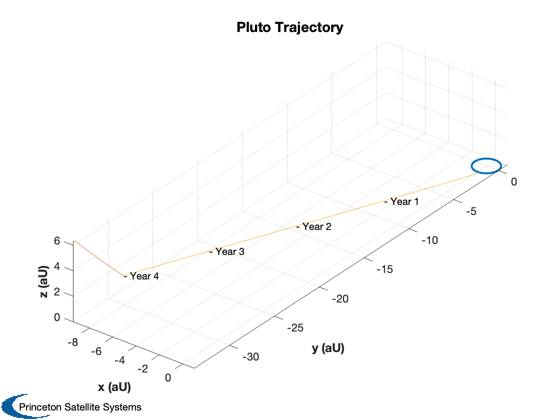
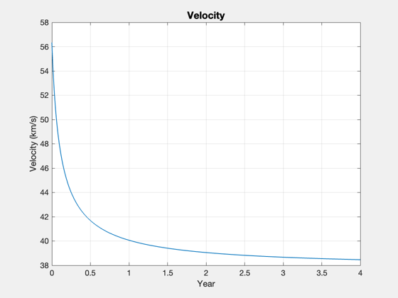

Pluto mission delta-Vs using DFD, Lambert solutions
Use Lambert to calculate the delta-V to Pluto over a range of transit times, from 2 to 10 years. Estimate the total mission mass using specific power to scale the spacecraft, plus allowing for a given tank fraction, thrust efficiency, and a payload of 1000 kg. Creates PlutoSpacecraftData.mat which is used by the CAD model for sizing the fuel and power systems.
See also Constant, SaveStructure, Plot2D, Plot3D, Date2JD, RK4, Mag, LambertTOF, VEscape, RocketMass, FOrbCart, RV2El, PlanetPosition
Contents
%-------------------------------------------------------------------------- % Copyright (c) 2015 Princeton Satellite Systems, Inc. % All Rights Reserved. %-------------------------------------------------------------------------- % Since version 2016.1 %--------------------------------------------------------------------------
Script parameters
These are the parameters that define the mission analysis. For simplicity we must assume a fixed thrust and Isp throughout the mission. The engine mass will be calculated solely based on the specific power.
% Payload mass (kg) mPLD = 1000; % Assume a specific power kWPerKg = 1.2; % Total engine power power = 2e6; % W % Tank structural fraction tankF = 0.02; % Engine thrust thrust = 20; % N % Engine efficiency eff = 0.5; % orbital altitude at Pluto (km) h = 600; % Epoch jD0 = Date2JD([2028 7 2 0 0 0]); % Fusion fuel computations He3_STP = 0.1339; rho3He = 59; % density of liquid 3He, kg/m3 amu3He = 1.6605e-27*3.016; % mass of 3He atom, kg ePerReaction = 18.3; % MeV, energy per D-3He reaction eJPerReaction = ePerReaction*1e6*1.602e-19; % J per reaction
Lambert analysis
Perform an analysis of the transfer to Pluto for an array of mission durations.
% Constants muSun = Constant('mu sun'); muPluto = Constant('mu pluto'); rPluto = Constant('equatorial radius pluto'); aU = Constant('au'); % Mass of the engine, using specific power massDFD = power/kWPerKg/1000; % Exhaust velocity - will be fixed uE = 2*power*eff/thrust; PlanetPosition( 'initialize', [3 9] ); [r0, ~, v] = PlanetPosition( 'update', jD0 ); dVOrbit = VEscape(rPluto+h,muPluto) - sqrt(muPluto/(rPluto+h)); years = linspace(2,10); n = length(years); dV = zeros(1,n); mF = zeros(1,n); mT = zeros(1,n); tAccel = zeros(1,n); hE3 = zeros(1,n); for k = 1:n duration = years(k)*365.25; [rI, ~, vI] = PlanetPosition( 'update', jD0+duration ); vT = LambertTOF( r0(:,1), rI(:,2), duration*86400, 1, muSun ); dV(k) = Mag(vT(:,1) - v(:,1)) + Mag(vT(:,2) - vI(:,2)); dVTotal = dV(k) + dVOrbit; [mF(k),mT(k)] = RocketMass( uE/9.806, mPLD+massDFD, tankF, dVTotal ); accel = thrust/(mT(k) - 0.5*mF(k)); tAccel(k) = dV(k)*1000/accel/86400; % if available, see He3MassFromPower if exist('He3MassFromPower','file') [~,~,vol] = He3MassFromPower( power*tAccel(k)*86400 ); hE3(k) = vol(1); else energy = power*tAccel(k)*86400; mass3He = amu3He*energy/eJPerReaction; hE3(k) = mass3He*1e3/He3_STP; end if tAccel(k)>duration tAccel(k) = 0; dV(k) = 0; mF(k) = 0; mT(k) = 0; hE3(k) = 0; end end yL = {'Total \Delta V (km/s)' 'Total Mass (kg)' 'Accel Time (days)' '^3He (L STP)'}; titleStr = sprintf('Pluto Mission - %d MW DFD %d N Thrust',round(power/1e6),round(thrust)); Plot2D(years,[dV;mT;tAccel;hE3],'Duration (Years)', yL,titleStr) subplot(4,1,2) hold on yy = axis; plot(yy(1:2),9306*[1 1])
Plot the mission
yearsMission = 4; % selected from prior plot duration = yearsMission*365.25; [rI, ~, vI] = PlanetPosition( 'update', jD0+duration ); [vT, a] = LambertTOF( r0(:,1), rI(:,2), duration*86400, 1, muSun ); dV = Mag(vT(:,1) - v(:,1)) + Mag(vT(:,2) - vI(:,2)); dVTotal = dV + dVOrbit; [massFuelPluto, massTotalPluto] = RocketMass( uE/9.806, mPLD+massDFD, tankF, dVTotal ); accel = thrust/(massTotalPluto - 0.5*massFuelPluto); % Calculate the 3He mass for the mission. See also He3MassFromPower in the % FusionPropulsion module, if available. tAccel = dV*1000/accel/86400; energy3He = 18.3*1.6e-19*1e6; % J per D-3He reaction energyTotal = power*tAccel*86400; % accel time only mHe3 = 5.0082e-27; % kg massHe3 = mHe3*energyTotal/energy3He; % Perform a point-mass heliocentric simulation n = 1000; rE = zeros(3,n); rP = zeros(3,n); vM = zeros(1,n); day = jD0 + linspace(0,duration,n); x = [r0(:,1);vT(:,1)]; % Note the 25% increase in velocity rT = zeros(3,n); el = RV2El(x(1:3),x(4:6),muSun); dT = (day(2)-day(1))*86400; % sec for k = 1:n r = PlanetPosition('update',day(k)); rE(:,k) = r(:,1); rP(:,k) = r(:,2); rT(:,k) = x(1:3); vM(1,k) = Mag(x(4:6)); x = RK4(@FOrbCart,x,dT,0,[0;0;0],muSun); end % Plot the trajectory with the planet orbits rE = rE/aU; rP = rP/aU; rT = rT/aU; Plot3D( rE, 'x (aU)', 'y (aU)', 'z (aU)', 'Pluto Trajectory' ) hold on plot3(rP(1,:),rP(2,:),rP(3,:)); plot3(rT(1,:),rT(2,:),rT(3,:)); % Add year labels year = (day - jD0)/365.25; j = ceil(linspace(1,n,5)); for k = 2:5 i = j(k); text(rT(1,i), rT(2,i), rT(3,i),sprintf('- Year %d',floor(year(i)))); end % Plot the velocity magnitude Plot2D(year,vM,'Year','Velocity (km/s)','Velocity') % Store mission data q = struct; q.massHe3 = massHe3; q.massFuel = massFuelPluto; q.massDFD = massDFD; q.massPld = mPLD; q.power = power; q.specPower = kWPerKg; thisP = fileparts(mfilename('fullpath')); SaveStructure(q,fullfile(thisP,'PlutoSpacecraftData')); %-------------------------------------- % $Id: 5ea6683046bbd766bc08cabbb746138a730b93d8 $ 